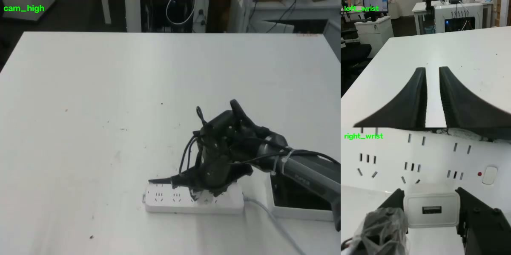
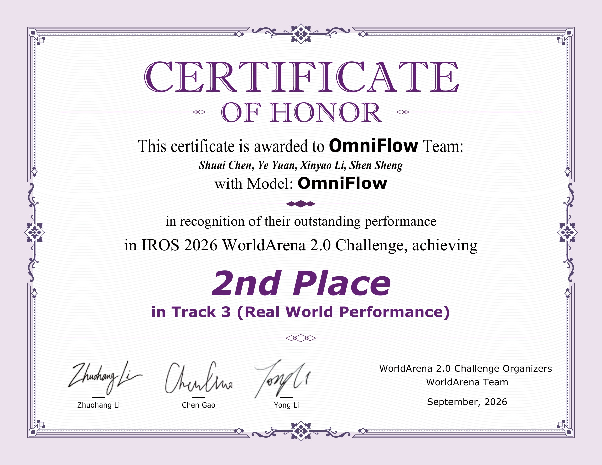

Track 3 · 真机操作总榜 第 2 名
67.37分
官方综合得分
SHUAI CHEN / SELECTED WORK
陈帅的研究与竞赛成果 · 视触觉融合、策略学习与真机验证
01 / COMPETITION ACHIEVEMENT
比赛成果IROS 2026 · WORLD ARENA 2.0
从桌面整理到精细接触操作，
在真实世界中验证机器人能力。
负责完整的数据筛选、算法、训练与部署。

视觉 × 触觉IROS 2026 WorldArena 2.0
Track 3 · Real World Performance
真机操作赛道
BENCHMARK RESULTS
官方榜单 · 核对日期 2026.11.03
67.37分
官方综合得分
75%
视觉任务平均成功率
73.33%
视触觉任务平均成功率
综合得分按官方难度与赛道权重计算；两个子榜分别为视觉 6 项、视触觉 3 项任务成功率的算术平均。查看数据口径 ↗
下方成功率均来自 WorldArena 官方榜单。视频为对应任务的演示记录，成功率以官方评测为准。
MEDIA & CERTIFICATE
赛事相关报道、官方榜单与获奖证书。

OFFICIAL CERTIFICATE · SEPTEMBER 2026
OmniFlow Team · Model: OmniFlow
证书署名：Shuai Chen, Ye Yuan, Xinyao Li, Shen Sheng
SOURCE 01 · OFFICIAL
总榜与两个子榜均可检索 OmniFlow，核对排名和各任务成功率。
在 Hugging Face 查看 ↗SOURCE 02 · MEDIA
“相比之下，OmniFlow 在纯视觉和视触觉两个子榜中都保持在第二位。其背后的上海科技大学长期开展机器人操作和触觉相关研究，自动化与机器人中心的具身操作研究覆盖触觉感知、遥操作、模仿学习、强化学习和多接触运动。”
AI 科技评论 · 报道节选
任务成功率来自官方公开记录。综合得分 67.37 为难度加权后的视觉部分（占 70 分）与视触觉部分（占 30 分）之和；不能写成整体成功率 67.37%。视觉均值为 75%，视触觉均值为 73.33%。
| 任务 | 模态 | 成功率 | 演示 |
|---|---|---|---|
| 整理桌面 | 视觉 | 100% | 查看演示 ↗ |
| 擦桌子 | 视觉 | 100% | 查看演示 ↗ |
| 倒水 | 视觉 | 100% | 查看演示 ↗ |
| 叠衣服 | 视觉 | 50% | 查看演示 ↗ |
| 夹薯片 | 视触觉 | 90% | 查看演示 ↗ |
| 削黄瓜 | 视触觉 | 40% | 查看演示 ↗ |
| 插插座 | 视触觉 | 90% | 查看演示 ↗ |
| 按指令整理桌面 | 视觉 | 100% | 暂无单独视频 |
榜单会随更新变化；本页保存 2026 年 11 月 3 日核对的版本。本页展示部分任务，子榜平均成功率仍按官方完整任务集计算。个人分工由陈帅提供，团队获奖与署名以证书为准。
核对版本 7f1bc898ab88